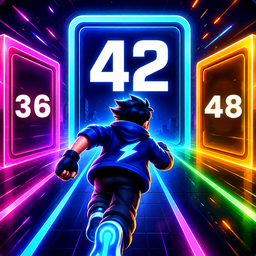
Games that make maths feel like play.
Pick your runner, race through neon worlds, read the sum, and swipe into the gate with the right answer before you reach it. Every world teaches a new topic, from simple addition all the way to exponents.
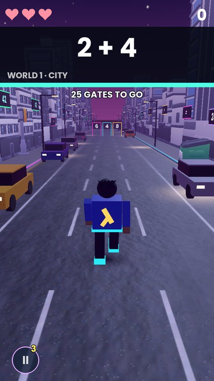
Simple to play. Hard to master.
Worlds
From the City to the Galaxy, each with its own maths topic, scenery and music.
Combo multiplier
Chain correct answers: ×2 after 3 in a row, rising to ×5 for long streaks.
Lanes, one swipe
Swipe left or right. The pace rises the further you run.
Gates per world
Clear 25 gates to unlock the next world, with revision questions along the way.
A full maths journey in one runner.
About one in five questions revises earlier worlds, so skills stay sharp as the challenge grows.
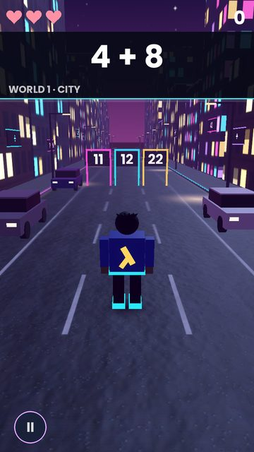
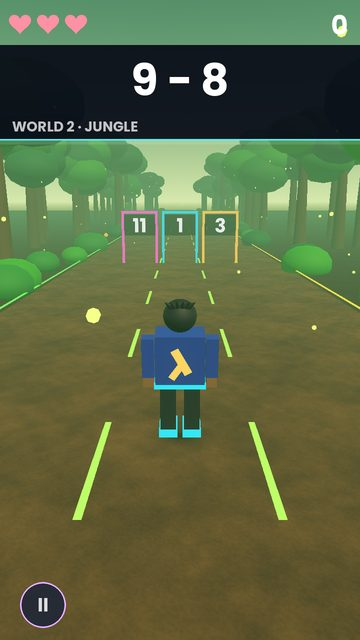
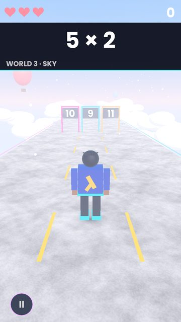
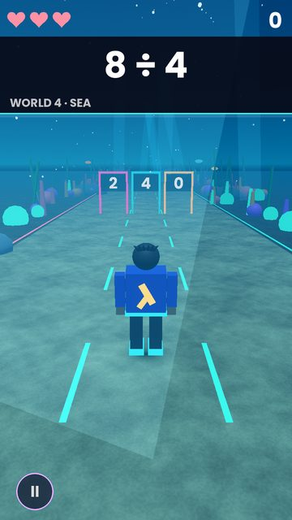
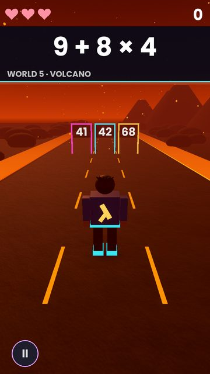
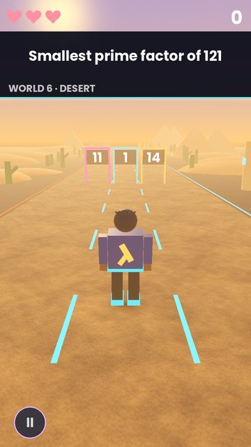
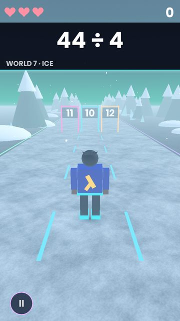
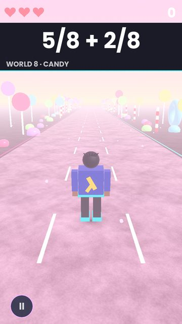
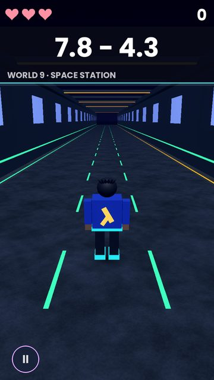
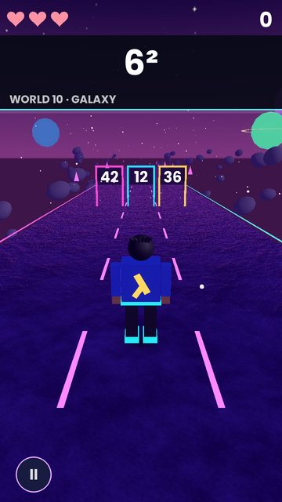
Six runners. Six neon identities.
Pick the runner you race as. Each one is a fully rigged and animated 3D character with their own outfit and glowing accent colour, and the DashFactor lightning bolt on their back. Neon Runner is ready from the start, and the rest unlock as you clear worlds.
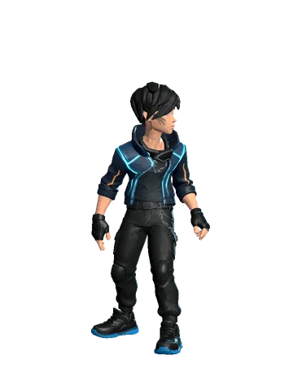
Neon Runner
Athletic, agile, blue neon.
Jacket with cyan trims, cargo pants, knee pads and glowing soles.
Starter runnerPulse
Fast, confident, magenta.
Cropped jacket over a purple top, with magenta knee patches.
Unlocks at world 2, Jungle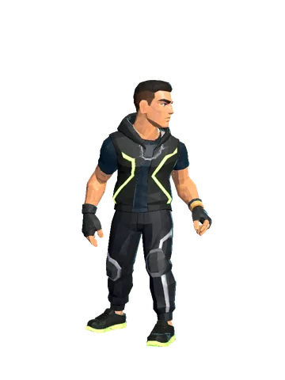
Volt
Powerful, bold, electric green.
Sleeveless vest with glowing green trims and leg stripes.
Unlocks at world 3, Sky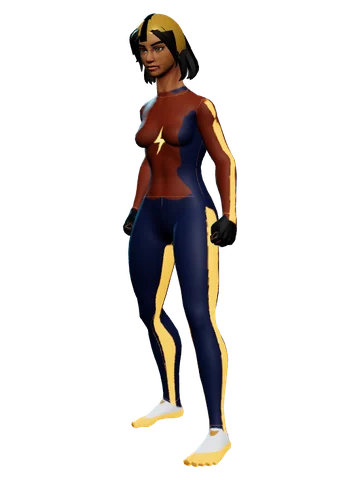
Blaze
Competitive, energetic, orange.
Bodysuit with orange stripes, a gold open-face helmet and white trainers.
Unlocks at world 4, Sea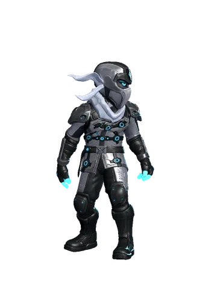
Phantom
Mysterious, sleek, silver.
Long armour coat and a full helmet with an ice-blue visor.
Unlocks at world 6, Desert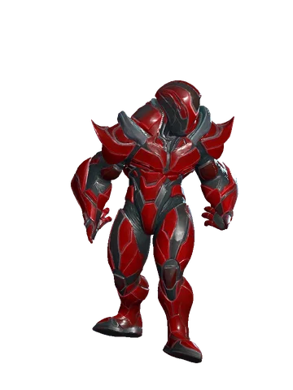
Titan
Strong, imposing, red.
Bodysuit with red stripes, a full red helmet and red boots.
Unlocks at world 8, CandyQuestions about DashFactor?
Read the FAQ on our support page or email us with your phone model and what happened.